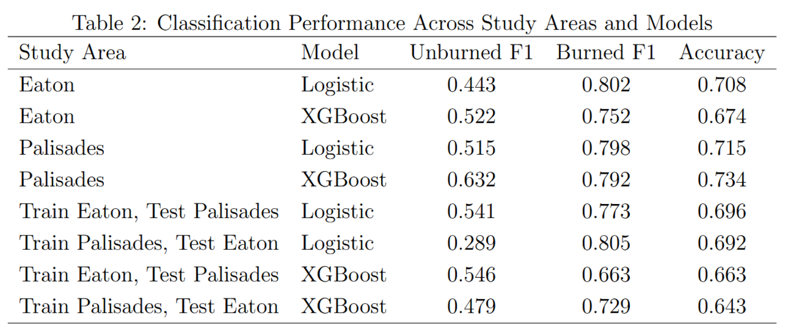
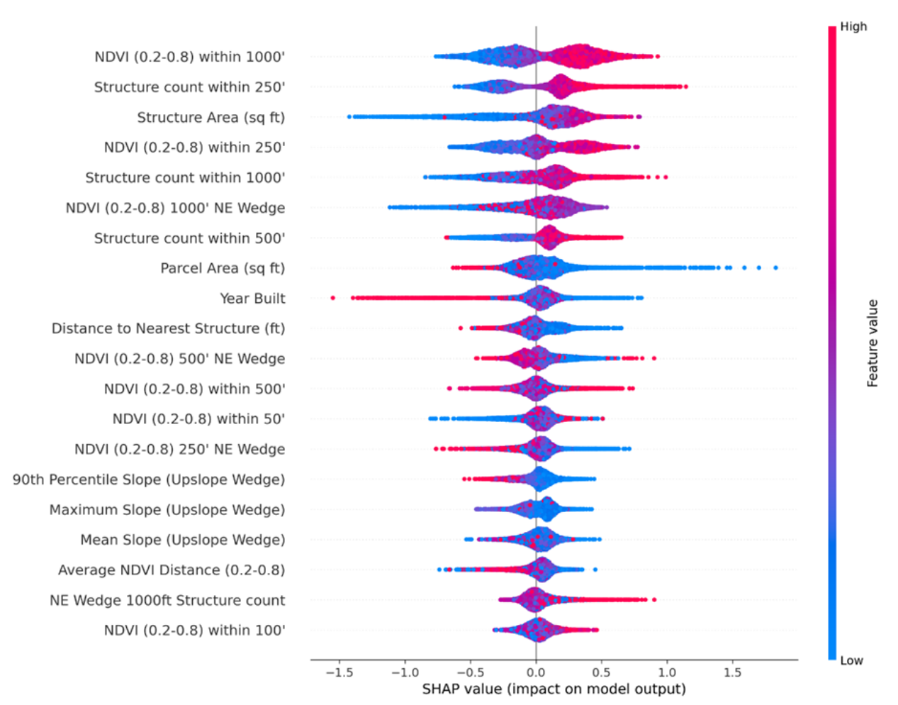
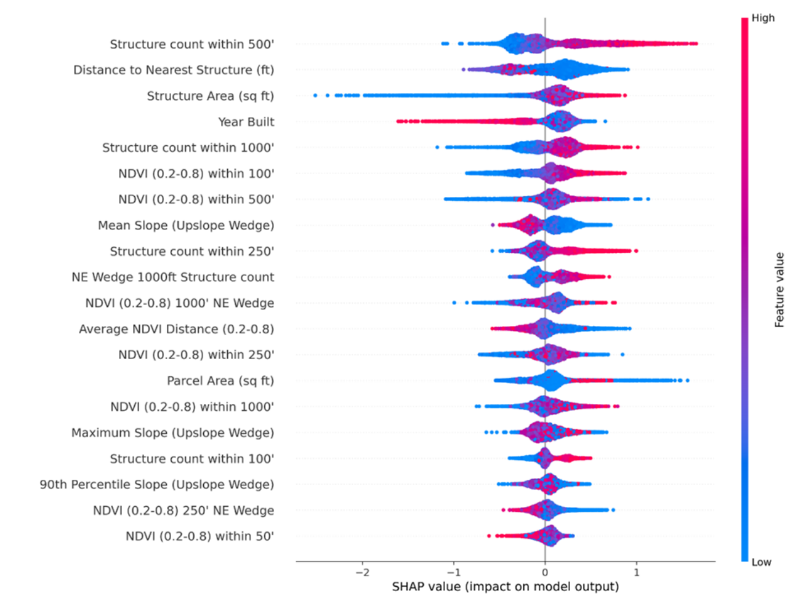
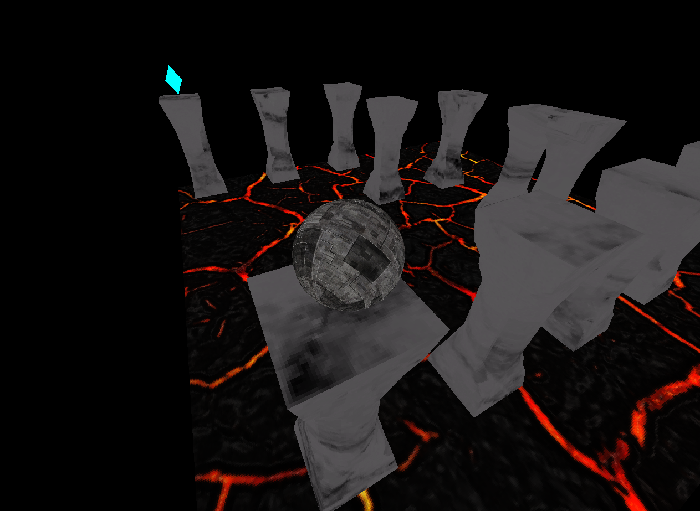
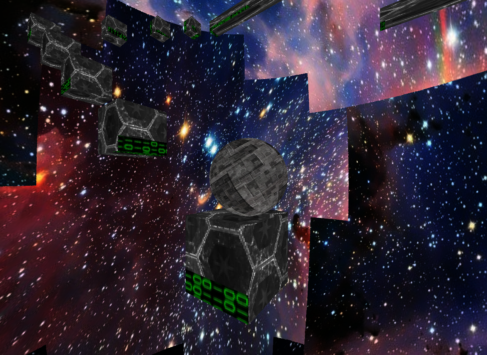
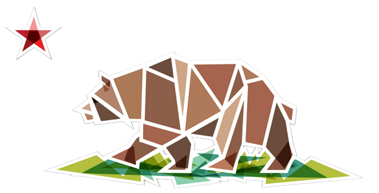

Structure-Level Risk Model for 2025 Palisades and Eaton Fires
This is an overview of my culminating project for my master's degree in data science and analytics (paper accepted in Spring 2026).
Problem statement
This project builds structure-level models for the 2025 Eaton and Palisades fires to better understand the factors that contributed to their destructiveness. Features in the model include structure density, presence of vegetation, topography, structure age, and wind alignment for predicting how a given structure fared in the respective conflagration.Damage maps for Eaton (left) and Palisades (right) fires


Eaton Fire: 14,021 acres and 9,413 structures burned.
Palisades Fire: 23,707 acres and 6,833 structures burned.
Explanatory variables:
The two following variables include subsets of the AOI, shown to convey the typical range and spatial variability of each metric. Plots are from the Palisades Fire study area.Structure density
Number of neighboring structures within 250, 500, and 1,000 ft of each structure. Example figure uses 250 ft radius.
Vegetation Density
Ratio of NDVI in given range within radii of 250, 500, and 1000 ft. Ranges of 0.2-0.8 and 0.3-0.8 used. Example figure demonstrates the ratio of pixels in the 0.2-0.8 range within a 250 ft radius.
Other explanatory variables:
- Year Built
- Slope
- Structure density in northeast
- Vegetation in northeast
- Structure Area
- Parcel Area
Response variable
The response variable is binary: either a structure was destroyed or not.Results
XGBoost and Logistic Regression were used to classify whether structures would burn or survive.Classification Accuracies

XGBoost SHAP Plots
Variables are listed from top to bottom in the plot by decreasing impact in the model. Note that the SHAP value (x-axis) represents the impact of each feature on the model output (i.e. closer to -1 meaning the prediction was pushed toward unburned, and closer to 1 meaning the prediction was pushed toward burned).
Palisades Fire Results

Overall, structure density, structure area, vegetation density, and year built were among the most influential factors. This is consistent with the results of Knapp et al. (2021), who found structure density to be the most important factor in predicting structure loss in the 2018 Camp Fire.
Full paper PDF
Poster PDF
Mappy
During August 2021 - May 2022, I worked at the Formal Analysis of Interactive Media (FAIM) Lab at Pomona College. I assisted in the development of Mappy, a Rust program which interprets pixel data from emulated Nintendo NES games. Mappy's main feature is to produce game maps, linking together different levels and rooms. I specifically worked on Sprite Blobbing and Avatar Detection features, which involve tracking game sprites and grouping them based on their movement and relation to user input. In fall 2021, we submitted a paper on Mappy to a small conference called AIIDE (AI and Interactive Digital Entertainment). Not only was the paper accepted, but it also received an award for best paper at the conference.
Click here to read the paper.Triumvirate Arena
Triumvirate Arena is a battle card game featuring three players: Nate, Chloe, and Grace. Each player type has three signature moves which might increase or decrease your health/mana, and/or do damage to the other player. The goal of this two player game is to reduce the opponent's health to zero. This project was part of the Spring 2022 Game Engine Programming class at Pomona College.
We wrote Triumvirate Arena in Rust, completely from scratch, without a pre-made game engine (using Bitblt and Vulkan shaders). In our team of 3 (myself, Chloe, and Grace), I worked on gameflow mechanics (health/mana interactions, turn taking); player moves; and creating original music, while my partners worked on other mechanics.

Click here for the Triumvirate Arena repository, in order to see the code and more gameplay examples!
Features:
- Two player turn taking
- Choose player
- Choose move
- Animated health bars
- Fonts + text writing
- Bitblt images
- Original music
- Sound effects for selecting moves, players, etc.
- Main/end screen
- Get info screens for players and moves
- Health and mana tracking (generation and subtraction moves)
- Health and mana requirements for moves
JumpyBall
JumpyBall is a 3D parkour game. The player navigates through levels by jumping across platforms, avoiding the ground, and working their way to the end gem.
We used the Frender game engine (created by Professor Joseph Osborn), which assisted with the 3D rendering. We created the physics, collision system and assets from scratch.
In JumpyBall, I primarily worked on asset creation and the collision system. I created all of the 3D models in Blender and wrote a Python script to create a set of bounding boxes for objects on the map (used for collision system). This project was also part of the Spring 2022 Game Engine Programming class at Pomona College.
Click here to watch the JumpyBall trailer!


Features:
- Jumping (double jump)
- Rolling
- Mid air rolling
- Roll while jumping
- Collision
- Bounding boxes for every object in scene, created via Blender Python script
- AABB-Sphere collision
- Camera (mouse responsive out of window)
- Level Switching
- Switch between levels (and beat the game) by collecting gems
- Level restart when player falls
- Modeling
- Made-from-scratch 3d models of ball, landing objects, and world
- Textures
- Cosmetic map textures (ex. lava ground, space sphere)
- Ball texture
- Landing object textures (pillars and cubes)
- Music (original JumpyBall music)
eBay Delivery Prediction Project
During Fall 2021, I worked in a team of 5 to create a neural network that predicts the delivery time of items sold on eBay (based on features such as declared handling days, item category, weight, etc.).
- Data cleaning
- Neural Network in PyTorch
- XGBoost and CatBoost models
Repository

California State Yo-Yo Championships Director
Directed the California State Yo-Yo Competition in 2025 and 2026, reviving the event after a multi-year hiatus caused by the COVID-19 pandemic.
- Managed team of 5 to book venue, design website, raise funds (registrations and sponsors), and oversee judge panel.
- Over 40 competitors in 2025 and over 50 in 2026.